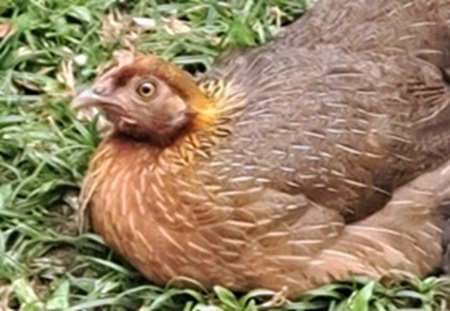
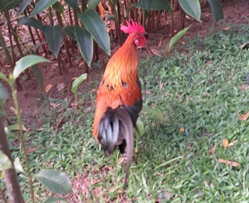
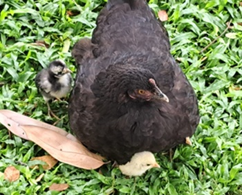
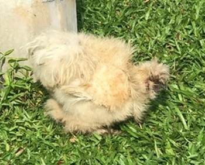
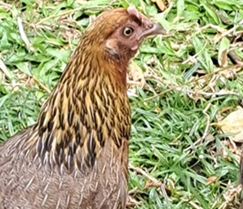
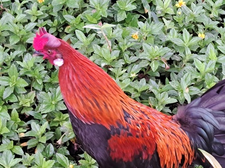
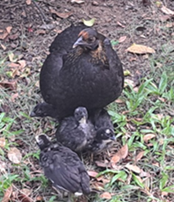
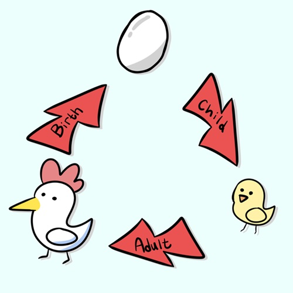
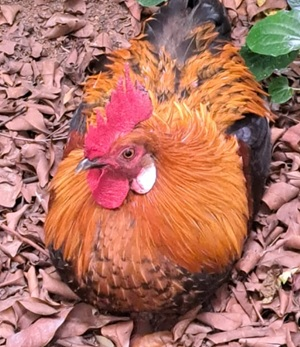

I'm sure you know what a chicken is—it's a common farm bird kept for its eggs and meat. Hens
lay
eggs, roosters crow, and they all love scratching the ground for food. Chickens live in
groups,
follow a pecking order, and make all sorts of clucking sounds to communicate. They're
simple,
social, and surprisingly smart! But have you ever taken a deeper dive into learning more
about
them?

Characteristics
This is a rooster — the male chicken known for its vibrant feathers and loud crowing.
Roosters
are often larger and more colorful than hens, with striking tail feathers and a prominent
comb
on their heads. They play an important role in protecting the flock, warning hens of danger,
and
establishing the pecking order through their behavior. Their crowing can be heard early in
the
morning, signaling the start of a new day.
Red Junglefowl
The red junglefowl (Gallus gallus), also known as the Indian red junglefowl
(and
formerly the bankiva or bankiva-fowl), is a species of tropical, predominantly
terrestrial
bird in the fowl and pheasant family, Phasianidae, found across much of Southeast and
parts
of South Asia. [wikipedia]

Black Junglefowl
The Black Junglefowl (Gallus sonneratii) is one of the wild ancestors of
domestic
chickens, native to the forests of southern India. It is known for its striking dark
plumage, with males displaying glossy black feathers with purplish or green iridescence
and
unique yellow or white markings. [wikipedia]

Silkie Chicken
The Silkie, also known as the Silky or Chinese silk chicken, is a Chinese
breed
of
chicken named for its atypically fluffy plumage, which is soft to the touch, like silk
or
fur. Other unusual qualities include black skin and bones, blue earlobes, and
pentadactyly
(five toes on each foot). [wikipedia]

Chicken species.. So many!
There are in fact a ton of chicken species! Some examples of unique breeds include
the
Sultan
Chicken, a popular
Turkish breed known for its elegant appearance, Brahma
chickens
, which are widely recognized for their large size and gentle nature, and
the Faverolles
chicken, which is an excellent egg layer.
However, these chickens are considered rare. They are native to specific countries
and are often kept as pets rather than for farming, as some breeds are not very hardy and
may fall sick or die easily without proper care.
Can I eat!?
Blatantly—yes. You can eat chicken! One of Singapore's signature dishes is Hainanese
Chicken Rice, and it's enjoyed by people all over the world! It's a well-known and
beloved delicacy.
On another note, we usually eat hens, not roosters. Why? Because rooster meat tends to
be tough and chewy. Roosters develop stronger muscles as they use them to fight for
territory and dominance. That makes their meat harder to cook and bite through.
But still, roosters aren't completely left out—they're often used in traditional Chinese
dishes like herbal chicken soup, rich chicken broth… and hey, maybe even chicken
nuggets. Quite yummy, honestly. But see... chicken on the right seems scared already!

Quiz Time!!!
Let's see if you know chicken...
1. What is another name for "Gallus Gallus"?
2. Chickens are as smart as...
3. Why do Roosters Crow? (select multiple)
4. Can chickens fly?
Your score goes here!
Chicken Population
So, about Singapore's chickens... why are there so many roaming around Singapore lately? While we
don't
usually think of chickens in an urban city, they're actually more common than you'd expect. Whether
they're waking people up with a morning crow or just pecking around under a tree, chickens have
quietly
become part of Singapore's everyday landscape!
Report
The issue of wild chickens came to the fore in 2017, when the Agri-Food and Veterinary
Authority
of Singapore (AVA) revealed that it put down 24 chickens that were wandering around Thomson
View
and Blocks 452 to 454 Sin Ming Avenue. There were about 20 complaints from residents there,
mainly about noise. [CNA]
Complaints
Turns out, Singaporeans are, in fact, NOT affected by the sound of the roosters
crowing
and chickens running amok. "We don't find them a nuisance," said housewife Eline Peh, who
moved
into the area late last year. "In fact, we will miss them if they are gone." Singaporeans
think
that the chickens give Singapore its identity, and enriches wildlife.

They are everywhere... Recognise their sound!
This is the clucking sound of a mother hen. Usually, they make clucking noises to
communicate with other hens and roosters within their range. It is a happy, friendly
cluck.
The second sound is made by a baby chick. Baby chicks tend to produce high-pitched and
surprisingly loud sounds. Instead of clucking like an adult chicken, they chirp.
Thirdly, we have the sound of an angry hen. Usually, hens are peaceful. However,
they
become aggressive when other animals steal their eggs or pose any danger to them. They
will
get defensive and try to scare the threat away.
Lastly, this sound is made by a rooster. Roosters usually crow at dawn to signal
the
start of a new day. While they are known for crowing in the morning, they also do it to
mark
their territory and show off their dominance!
Fun Facts!
What makes chickens, one of the most basic and common animal that you have probably heard, so
special?
Well, they are actually more capable than you think! At first, they might seem like the regular
typical
garden bird. But after knowing these fun facts, it will make you reconsider!
Chickens love to play, run, skip and flap their wings. They also enjoy sunbathing.
Hens teach sounds to their chicks while they are still in the egg.
Chickens have a profound memory and are able to distinguish between more than 100 faces
of
their species. They can also recognise people.
Chickens are able to distinguish colours. They also see ultraviolet light and iridescent
hues. Their world looks more colourful than ours.
The cognitive skills of chickens are similarly high to those of a dog or cat.

Click on button for info!!!

Info!!
Info goes here!
Make your own Chicken Army!
Click Add button to add chicken, and Remove button to remove chicken.
Let's Play, FlappyChick!
Score: 0
Time: 0
Can chickens fly?
One of the most frequently asked questions is: Can chickens actually fly?
The answer is yes — but only for short distances!
You might wonder how they manage to fly at all, especially since their bodies are much
heavier
than those of other birds, like the common mynah or the dove.
This is because chickens have a unique wing structure that allows them to glide for a short
while. Their wings and bodies are covered in many feathers, which aid them in brief flight.
But feathers aren't just for flying — they also serve an important purpose in incubating
eggs.
Mother hens use their feathers to keep their eggs warm and safe.
And that's just one of the reasons why chickens are so cool.

Photography
All the photographs were taken by me! There are a lot of chickens around the central areas of
Singapore — especially near Outram Park, Queenstown, and Redhill. Have you noticed the big
field just outside NYP? There are chickens there too!
This really shows that Singapore lives up to its name as a "Garden City." It's
amazing how both animals and humans can coexist so closely with nature. That's the beauty of
mother nature.